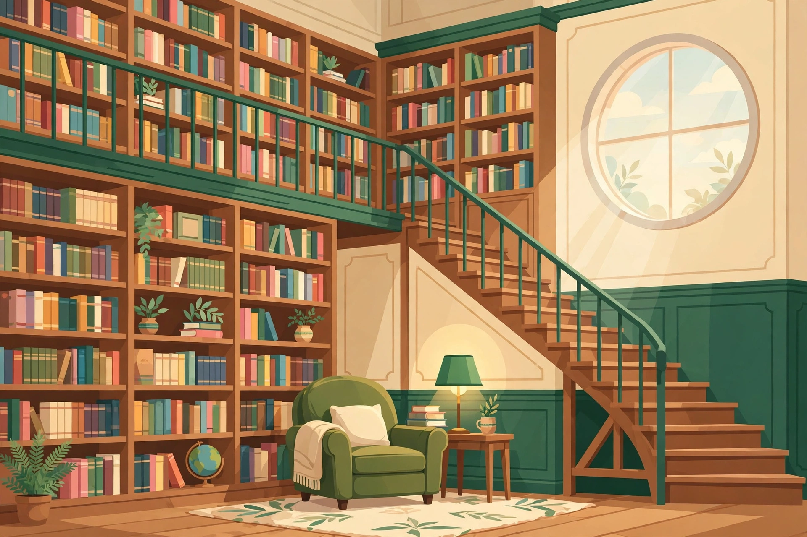

Welcome to the Reading Hall — tall shelves, a warm lamp, and a chair waiting for the next reader.
Meet Bessie the Book, the mascot of this world.
The Signature Book Depository holds 48,120 books by Justin Addam Higgins — novels, courses, and manuals across sixteen genres, from Science Fiction to Poetry — each with its word count and its opening description.
Two working tools, right here on the page. Each one says what it does and what it cannot do. Neither tool reaches the live web, and neither one needs a key.
Enter a word count to get the reading time in minutes, at 200 words a minute.
Words:
Search the 500-title book sample on this page. Shows up to 10 matches.
Search:
Designs, printables, and demos — free, downloadable, usable on the page. Every product is labeled Signature or Fun. Nothing here is for sale.
A printable set of bookmarks, one per genre, with the genre name and a line about the books in it.
Making: print the printable file on card, cut out the bookmarks, and keep one in each book you are reading.
A printable reading log: lines for the book title, the author, the word count, and the date finished.
Making: print the printable file, write in each book as you finish it, and keep the log with the books.
A poster of the Reading Hall shelves with the tall books, the staircase, and the armchair by the lamp.
Making: print the printable file and pin it up. The floating dust in the lamplight is a drawing, not a promise that books glow.
Download all product lines as a printable (text)
Bessie once read the whole Reading Hall in a single afternoon, then asked for the sequel. There is no sequel. There is always another shelf. (Fun — a made-up tale, not a record.)